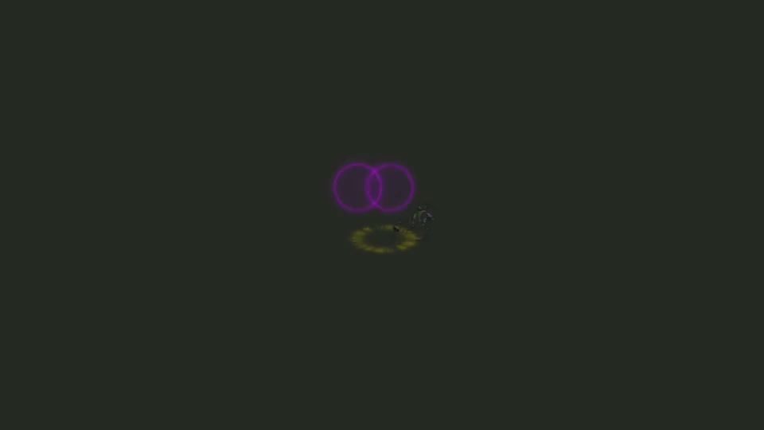

B02 / 070 · 156帧完整原序列
7 / 156 · 0.23s
20 / 156 · 0.67s
33 / 156 · 1.10s

46 / 156 · 1.53s
59 / 156 · 1.97s
72 / 156 · 2.40s
85 / 156 · 2.83s
98 / 156 · 3.27s
111 / 156 · 3.70s
124 / 156 · 4.13s
137 / 156 · 4.57s
150 / 156 · 5.00s